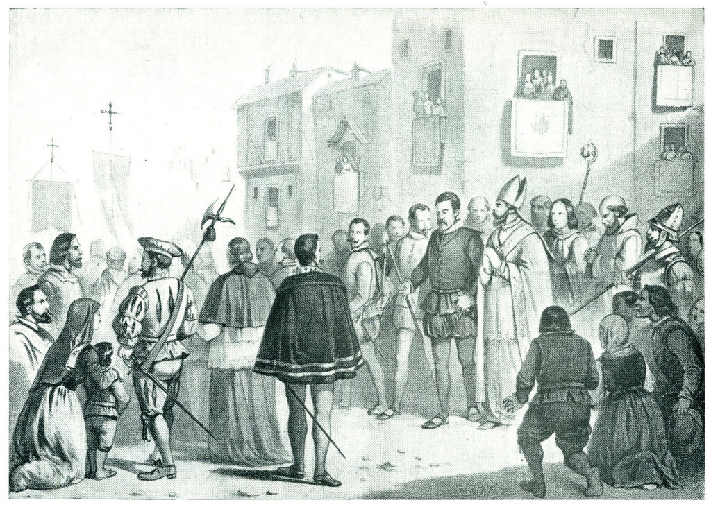
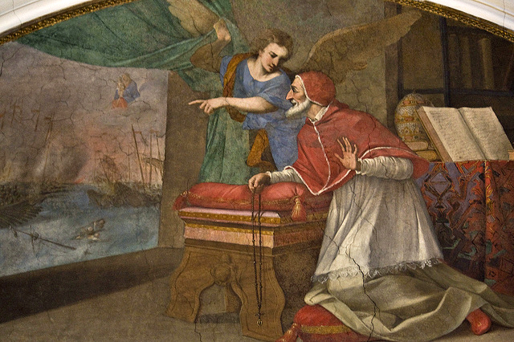
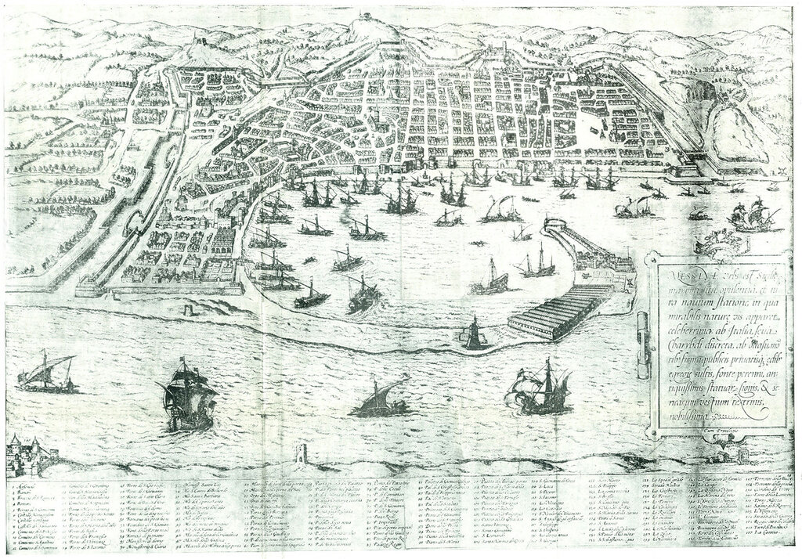

Конец Священной лиги?
Но над каждым сожженным мгновеньем
Возникает, как Феникс, ― предание.
В. Ф. Ходасевич. Февраль (1913)
Когда заканчиваешь чтение интересной книги, всегда хочется узнать, что станет с ее героями в дальнейшем. Если самому автору, как и его читателю, хочется это узнать, то появляется «Двадцать лет спустя» и «Десять лет спустя». Мне интересно, как развивались события, поэтому продолжим повесть о последнем великом сражении галерных флотов близ небольшого городка Лепанто (правда, приходится учитывать, что продолжение всегда бледнее первой части ).
Стало ли возвращение объединенного флота Священной лиги на Корфу в конце октября 1571 года концом противостояния между Испанией, Венецией с союзниками и Османской империей, на море?

Торжественная процессия в Мадриде после получения известия о победе при Лепанто. 1 ноября 1571 г.
Уже через три дня после получения известия о победе при Лепанто, 22 октября 1571 года дож Венеции Альвизе Мочениго и Сенат Светлейшей направили письмо Дону Хуану, в котором, наряду с признанием заслуг принца в общей победе над турецким флотом, содержался призыв к формированию нового флота «для освобождения тысяч бедных христиан, которые продолжают томиться в турецкой неволе».
Одновременно принимались меры по воссозданию и реорганизации военно-морских сил республики. Новым генеральным проведитором флота вместо погибшего при обороне Фамагусты Агостино Барбариго был назначен Джакомо Соранцо (Giacomo Soranzo). Пост генерального проведитора был не только почетным, но и крайне ответственным в общей военной администрации Венеции. Инструкции, которые получил Соранцо при своем назначении, не отличались сильно от всех других инструкций, которые давали отцы республики вновь назначенным военачальникам, и все же особо было подчеркнуто, что необходимо строго следить за командирами галер (governatori и sopracomiti), не позволяя им перевозить на своих галерах коммерческие грузы и строго контролировать исполнение командирами закона от 16 ноября 1470 года, не позволяющего использовать на офицерских должностях галеры «своих сыновей и племянников». Соранцо обязан был, как и его предшественники, следить за состоянием корпусов галер и надлежащим уходом за ними, сохранением весел, парусов, вооружения в готовности к использованию по назначению. Как и полагалось, Соранцо получил жалованье и все виды довольствия за четыре месяца вперед, а также верительные грамоты от Сената, которые он должен был вручить командующему Объединенным флотом Дону Хуану Австрийскому. Новому генеральному проведитору предписывалось установить доверительные отношения с главкомом, а также с представителем папы Маркантонио Колонной. Одновременно с назначением нового генерального проведитора флота дож и Сенат республики направили директиву Себастьяно Веньеру восстановить боеспособность венецианского флота в самые кратчайшие сроки с тем, чтобы использовать результаты победы при Лепанто для дальнейшего наступления на турок. Стамбул, по данным венецианской разведки, защищало очень мало воинов («con pochissima gente da guerra»), так как столичный гарнизон был обескровлен в ходе ведения Кипрской войны и оснащения кораблей, предназначенных для противодействия объединенному флоту Священной лиги. В городе ощущался дефицит продовольствия. Недостаток снабжения отмечался и в турецком гарнизоне на Кипре. Оставляя конкретные решения по дальнейшему использованию флота на усмотрение Веньера и его советников, дож и Сенат вместе с тем считали, что в любом случае корабли флота, действуя в водах между Кипром и Критом, должны проявить активность по нарушению турецких морских коммуникаций и срыву поставок продовольствия в Стамбул и на Кипр.
Поощряла ли эта директива решительные наступательные действия возглавляемого Веньером венецианского флота против турок? Мне так не кажется. Это было скорее решение по блокаде Константинополя, предпринятое с целью усиления позиций Венеции в ее тайных переговорах о мире с руководством Османской империи.
Как вели себя другие члены Священной лиги после победы при Лепанто?

Видение папы Пия V.
Папа Пий V получил известие о победе от своего нунция в Венеции Факкинетти через курьера, который прибыл в Рим в ночь с 21 на 22 октября. Он тут же направляет письма всем главам государств христианского мира, поздравляя их с грандиозным военным успехом. Вновь папа пытается привлечь к участию в лиге императора Максимилиана и короля Франции Карла IX (и вновь безуспешно). Отдельно он написал письмо Дону Хуану, в котором, помимо восхищения его деятельностью на посту главнокомандующего, выразил уверенность, что флот под его командованием продолжит наступление на турок. Папа вполне конкретен, он высказывает мнение, что новая кампания флота начнется в марте-апреле следующего года. Он пишет в посланиях главам государств о необходимости продолжать оказывать на турок военное давление. В бреве от 26 октября Пий V обращается к Дону Хуану, настаивая на проведении строгой поименной регистрации всех захваченных у турок рабов и пленных, чтобы определить, кого из них можно освободить, а за кого истребовать выкуп. При этом папа строго подчеркивает, что недопустимо отпускать даже за выкуп капитанов турецких кораблей и других квалифицированных моряков, чтобы исключить их возвращение на турецкий флот в ближайшей перспективе. Кстати, такой же линии придерживается и руководство Венеции. В письме сената к Веньеру содержится указание ни в коем случае не передавать захваченные у турок трофеи (пушки, тюки шерсти и хлопка, запасной такелаж, морские сухари) в руки частных предпринимателей из опасения, что последние тут же продадут их туркам ("con pericolo anco d' andar in mano de Turchi"; природа частника не меняется на протяжении веков, это верно). Все подобные действия имеют одну цель – не допустить быстрого воссоздания турецкого флота.
Но не всё было так уж безоблачно в лагере победителей. Вновь зашевелились взаимные подозрения у командования национальных контингентов. Испанцы, не без оснований, подозревали Венецию в подготовке под прикрытием Лиги сепаратного мира с турками. Дон Хуан вновь вспомнил казнь четырех итальянцев, находившихся на службе у короля Филиппа II, которую совершил Веньер в Игуменице 2 октября. Не мог он простить и самовольства венецианца, пославшего гонца в свою столицу без его, Дона Хуана, разрешения. Но это были мелочи по сравнению с полным расхождением взглядов на судьбу территорий, которые будут захвачены у турок в будущем. Дележ шкуры неубитого медведя никогда не приводит к добру, об этом говорят судьбы многих военно-политических союзов в истории.
На фоне всех этих политических событий объединенный флот христиан 1 ноября 1571 года возвращается в Мессину. Следить за его судьбой мы продолжим в следующий раз.

Мессина 1571 г. (кабинет эстампов испанской Национальной Библиотеки)